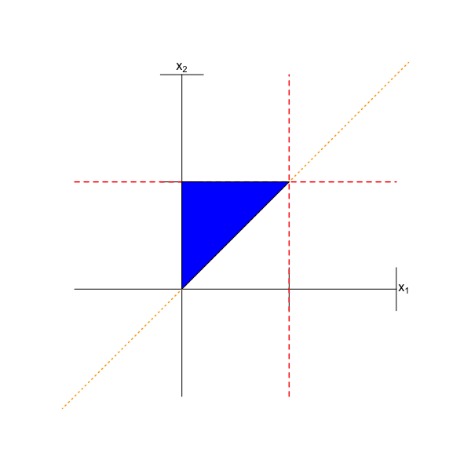
6 Multivariate Distributions
In this chapter, we move away from independent and identically distributed data to examining the situation in which \(\{X_1,\ldots,X_p\}\) are \(p\) random variables that are jointly sampled according to some multivariate distribution \(P\). Our focus will not be on statistical inference, but on how one works with (specifically) bivariate probability distributions: assessing the independence of random variables, computing the covariance and correlation between them, deriving marginal and conditional distributions, and working with conditional expected value and variance. (While noting that any results that we write down for bivariate distributions can be generalized to higher-dimensional ones as well.)
Thus far we have looked at univariate probability distributions, i.e., we have assumed that there is a single random variable \(X\) that maps the events in a sample space to the real-number line. The quantity represented by \(X\) might be, for instance, height or weight.
In this chapter, we shift to the multivariate case, wherein we might have \(p\) random variables \(\mathbf{X} = \{X_1,\ldots,X_p\}\) representing, e.g., height and weight (if \(p = 2\)). When there are a set of \(p\) random variables, they are sampled from a joint \(p\)-dimensional probability mass or density function that encapsulates how the random variables are jointly distributed. (It can be the case that the set can contain both discrete and continuous random variables, but for simplicity we will ignore that possibility here.) Both joint pmfs \(p_{X_1,\ldots,X_p}(x_1,\ldots,x_p)\) and joint pdfs \(f_{X_1,\ldots,X_p}(x_1,\ldots,x_p)\) have similar properties as their univariate counterparts: they are non-negative (with \(p_{X_1,\ldots,X_p}(x_1,\ldots,x_p) \leq 1\)) and they either sum or integrate to 1. They is nothing “special” about these functions; they are simply more mathematically complex and thus often less easy to work with. However, there are new concepts for us to cover that only arise in a multivariate context.
- Independence of Random Variables: do the sampled values for one random variable (e.g., heights) depend on the sampled values for the others (e.g., weights)? If not, the random variables are independent. (In this simple example, we expect that heights and weights to be very much dependent: on average, taller people are heavier.)
- Covariance and Correlation: these metrics build upon the concept of variance and indicate the amount of linear dependence between two random variables.
- Marginal Distributions: these show how a subset of the random variables is (jointly) distributed, without regard to the values taken on by the other random variables. For instance, if \(f_{X_h,X_W}(x_h,x_w)\) represents the joint distribution of heights and weights in a population, then the marginal distribution \(f_{X_h}(x_h)\) represents how heights are distributed, without regard to weight.
- Conditional Distributions: these show how a subset of the random variables is (jointly) distributed, conditional on the other random variables taking on specific values. For instance, the conditional distribution \(f_{X_h \vert X_w}(x_h \vert x_w)\) indicates the distribution of heights given a specific weight.
- Conditional Expectation and Variance: these metrics represent the mean and “width” of conditional distributions.
Note that throughout this chapter, we will illustrate concepts using bivariate distributions, as adding mathematical complexity by increasing dimensionality provides no additional benefit in terms of conceptual understanding. The one exception to this is in the last section, where we discuss the multivariate normal distribution.
6.1 Independence of Random Variables
What to take away from this section:
Two random variables \(X_1\) and \(X_2\) that are sampled according to a bivariate probability density function \(f_{X_1,X_2}(x_1,x_2)\) are independent random variables if…
no part of the boundary of the domain of \(f_{X_1,X_2}(x_1,x_2)\) depends on both the coordinates \(x_1\) and \(x_2\); and
if \(f_{X_1,X_2}(x_1,x_2)\) can be factored into two functions, one that is only a function of \(x_1\) and one that is only a function of \(x_2\).
In Chapter 1, we describe at a high level the concept of two or more random variables being independent of each other. In that chapter, we give the example of a bivariate probability density function, i.e., a function which outputs the probability density given two inputs, \(x_1\) and \(x_2\): \(f_{X_1,X_2}(x_1,x_2)\). To test for independence, we need only inspect the functional form of \(f_{X_1,X_2}(x_1,x_2)\) and its domain; \(X_1\) and \(X_2\) are independent if and only if
- the boundaries of the domain depend on either \(x_1\) or \(x_2\) but not both at the same time (i.e., the domain is “rectangular”); and
- \(f_{X_1,X_2}(x_1,x_2)\) can be factored into the product of functions that only depend on \(x_1\) and on \(x_2\), respectively: \(f_{X_1}(x_1) \times f_{X_2}(x_2)\).
(Furthermore, we state that if \(f_{X_1}(x_1) = f_{X_2}(x_2)\), then \(X_1\) and \(X_2\) are iid random variables.)
If either condition given above does not hold, then we conclude that \(X_1\) and \(X_2\) are dependent random variables.
6.1.1 Determining Whether Two Random Variables are Independent
Let \(X_1\) and \(X_2\) have the following joint pdf: \[ f_{X_1,X_2}(x_1,x_2) = c(1-x_2) \] for \(0 \leq x_1 \leq x_2 \leq 1\). For now, we are not concerned with the value of the constant \(c\). Are \(X_1\) and \(X_2\) independent random variables?
The first thing to do is inspect the joint domain. This can be tricky, and it is often best to break the statement of the domain up into multiple “pieces.” Here, we can say that first, we know that \(x_1 \in [0,1]\) and that \(x_2 \in [0,1]\). This limits the domain to a box on the \(x_1\)-\(x_2\) plane. (See the axes and the red dashed lines in Figure 6.1.) Furthermore, we know that \(x_1 \leq x_2\), or, equivalently, that \(x_2 \geq x_1 + 0\), i.e., that \(x_2\) lies above a line with slope one and intercept zero. (See the orange short-dashed line in Figure 6.1.) Given that the domain is triangular, we can state unequivocally here that \(X_1\) and \(X_2\) are not independent random variables. In particular, we do not need to check whether \(f_{X_1,X_2}(x_1,x_2) = f_{X_1}(x_1) \times f_{X_2}(x_2)\).
As a second example, let \(X_1\) and \(X_2\) have the following joint pdf: \[ f_{X_1,X_2}(x_1,x_2) = ce^{-x_1x_2} \,, \] where \(0 \leq x_1 \leq 1\) and \(0 \leq x_2 \leq 1\). Again, we are not concerned about the value of \(c\), at least for now. Are \(X_1\) and \(X_2\) independent random variables?
We can see by inspection that the domain is “rectangular,” specifically a square with vertices (0,0), (0,1), (1,0), and (1,1). So far, so good. Can we factor \(f_{X_1,X_2}(x_1,x_2)\) into two separate functions that depend only on \(x_1\) or only on \(x_2\)? The answer is no. (As a reminder, \(e^{ab} \neq e^a e^b\)!) Hence we can state that \(X_1\) and \(X_2\) are not independent random variables.
6.2 Properties of Multivariate Distributions
What to take away from this section:
- The probability mass and density functions of bivariate (and more generally, multivariate) distributions have the same properties as their univariate counterparts: they are non-negative, sum or integrate to one over their domains, can be characterized via expected value and variance, and have cumulative distribution functions. They simply are defined along more than one coordinate axis.
As stated in Chapter 1, a probability distribution is a mapping \(P : \Omega \rightarrow \mathbb{R}^n\), where \(\Omega\) is the sample space for an experiment. This mapping describes how probabilities are distributed across the values of a random variable. In the first five chapters, \(n = 1\), meaning that we focus on univariate distributions. In this chapter, however, \(n > 1\), with the bulk of our discussion focusing upon the case \(n = 2\). Nothing changes, fundamentally, when we work with multivariate distributions: (a) they are non-negative; and (b) they sum or integrate to 1. Assuming \(n = 2\), we can write that
| joint pmf | joint pdf |
|---|---|
| \(p_{X_1,X_2}(x_1,x_2) \in [0,1]\) | \(f_{X_1,X_2}(x_1,x_2) \in [0,\infty)\) |
| \(\sum_{x_1} \sum_{x_2} p_{X_1,X_2}(x_1,x_2) = 1\) | \(\int_{x_1} \int_{x_2} f_{X_1,X_2}(x_1,x_2) dx_2 dx_1 = 1\) |
We will reiterate that the joint pdf \(f_{X_1,X_2}(x_1,x_2)\) is not the probability of sampling the tuple \((x_1,x_2)\) but rather is a probability density; to determine probabilities, we would invoke multi-dimensional integration: \[ P(a_1 \leq X_1 \leq b_1,a_2 \leq X_2 \leq b_2) = \int_{a_1}^{b_1} \int_{a_2}^{b_2} f_{X_1,X_2}(x_1,x_2) dx_2 dx_1 \,. \]
As for the joint cumulative distribution function, or joint cdf, the convention is to treat each axis separately from the others, i.e., to define it as \[ F_{X_1,X_2}(x_1,x_2) = P(X_1 \leq x_1 \cap X_2 \leq x_2) \,. \] The joint cdf satisfies the following properties:
- if either \(X_i = -\infty\), the joint cdf is zero;
- if both \(X_i = \infty\), the joint cdf is one;
- it increases monotonically along each coordinate axis; and
- if \(X_1\) and \(X_2\) are independent random variables, then \(F_{X_1,X_2}(x_1,x_2) = F_{X_1}(x_1) F_{X_2}(x_2)\).
To characterize bivariate distributions (and multivariate ones in general), we compute distribution moments by utilizing the Law of the Unconscious Statistician: \[\begin{align*} E[g(X_1,X_2)] &= \sum_{x_1} \sum_{x_2} g(x_1,x_2) p_{X_1,X_2}(x_1,x_2) \qquad \mbox{discrete}\\ &= \int_{x_1} \int_{x_2} g(x_1,x_2) f_{X_1,X_2}(x_1,x_2) dx_2 dx_1 \qquad \mbox{continuous} \,, \end{align*}\] with the shortcut formula continuing to hold in the multivariate case: \[ V[g(X_1,X_2)] = E\left[ g(X_1,X_2)^2 \right] - (E[g(X_1,X_2)])^2 \,. \]
We note that if we write \(g(x_1,x_2)\) as \(g_1(x_1)g_2(x_2)\) and if \(X_1\) and \(X_2\) are independent random variables, then \[\begin{align*} E[g_1(X_1)g_2(X_2)] &= \int_{x_1} \int_{x_2} g_1(x_1) g_2(x_2) f_{X_1,X_2}(x_1,x_2) dx_2 dx_1 \\ &= \int_{x_1} \int_{x_2} g_1(x_1) g_2(x_2) f_{X_1}(x_1) f_{X_2}(x_2) dx_2 dx_1 \\ &= \left[ \int_{x_1} g_1(x_1) f_{X_1}(x_1) \right] \cdot \left[ \int_{x_2} g_2(x_2) f_{X_2}(x_2) \right] \\ &= E[g_1(X_1)] E[g_2(X_2)] \,. \end{align*}\] So, for instance, \(E[X_1X_2] = E[X_1]E[X_2]\) if \(X_1\) and \(X_2\) are independent, but not generally.
6.2.1 Characterizing a Discrete Bivariate Distribution
Let \(X_1\) and \(X_2\) have the following joint probability mass function \(p_{X_1,X_2}(x_1,x_2)\):
| \(x_2 = 0\) | \(x_2 = 1\) | \(x_2 = 2\) | |
| \(x_1 = 1\) | 0.20 | 0.30 | 0.00 |
| \(x_1 = 2\) | 0.40 | 0.00 | 0.10 |
What is \(E[X_1X_2]\)?
We utilize the Law of the Unconscious Statistician: \[\begin{align*} E[X_1X_2] &= \sum_{x_1} \sum_{x_2} x_1 x_2 p_{X_1,X_2}(x_1,x_2) \\ &= 1 \times 0 \times 0.20 + 2 \times 0 \times 0.40 + 1 \times 1 \times 0.30 + 2 \times 2 \times 0.10 \\ &= 0.30 + 0.40 = 0.70 \,. \end{align*}\]
What is \(F_{X_1,X_2}(3/2,3/2)\)?
The joint cdf is \[\begin{align*} P(X_1 \leq 3/2 \cap X_2 \leq 3/2) &= P(X_1 = 1 \cap X_2 = 0) + P(X_1 = 1 \cap X_2 = 1) \\ &= 0.20 + 0.30 = 0.50 \,. \end{align*}\]
6.2.2 Characterizing a Continuous Bivariate Distribution
Let \(X_1\) and \(X_2\) have the following joint probability density function: \[ f_{X_1,X_2}(x_1,x_2) = c(1-x_2) \,, \] with \(0 \leq x_1 \leq x_2 \leq 1\). In an example above, we determined that \(X_1\) and \(X_2\) are dependent random variables due to the domain of the pdf not being “rectangular” on the \(x_1\)-\(x_2\) plane (see Figures Figure 6.1 and Figure 6.2).
Here, we will first determine the value of \(c\) that makes this function a valid joint pdf. Carrying out this calculation will involve double integration; for a short review of double integration, see Chapter 8. We note here that we can integrate in either order (i.e., along the \(x_1\) axis first, or the \(x_2\) axis first), as the final result will be the same. Here, we will integrate along \(x_1\) first, since the lower bound along this axis is zero (a choice which often simplifies the overall calculation) and because \(x_1\) does not appear in the integrand: \[\begin{align*} \int_0^1 \left[ \int_0^{x_1 = x_2} c (1-x_2) dx_1 \right] dx_2 &= c \int_0^1 (1-x_2) \left[ \int_0^{x_1 = x_2} dx_1 \right] dx_2 \\ &= c \int_0^1 (1-x_2) \left[ \left. x_1 \right|_0^{x^2} \right] dx_2 \\ &= c \int_0^1 x_2 (1-x_2) dx_2 \\ &= c B(2,2) = c \Gamma(2) \Gamma(2) / \Gamma(4) \\ &= c \times 1! \times 1! / 3! = c/6 = 1 \,. \end{align*}\] Thus \(c = 6\). Note that we take advantage of the fact that \(x_2 (1-x_2)\) integrated from 0 to 1 is a Beta(2,2) distribution. If we had not made that association, we would still have observed the same final solution after integrating the polynomial in the integrand.
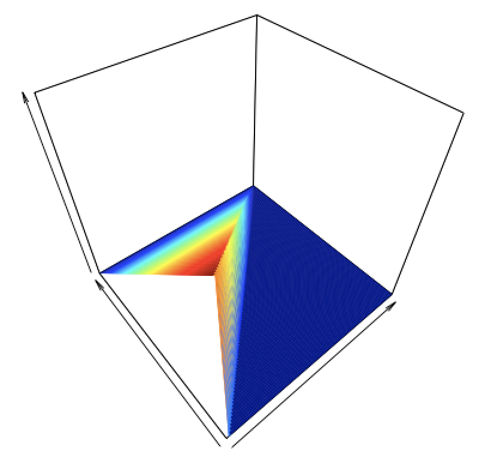
Now we will ask, what are \(E[X_2]\) and \(V[X_2]\)? \[\begin{align*} E[X_2] &= \int_0^1 \left[ \int_0^{x_1 = x_2} 6 x_2 (1-x_2) dx_1 \right] dx_2 \\ &= 6 \int_0^1 x_2 (1-x_2) \left[ \int_0^{x_1 = x_2} dx_1 \right] dx_2 \\ &= 6 \int_0^1 x_2 (1-x_2) \left[ \left. x_1 \right|_0^{x^2} \right] dx_2 \\ &= 6 \int_0^1 x_2^2 (1-x_2) dx_2 \\ &= 6 B(3,2) = 6 \Gamma(3) \Gamma(2) / \Gamma(5) = 6 \times 2! \times 1! / 4! = 1/2 \,. \end{align*}\] In a similar manner, we can determine that \[\begin{align*} E[X_2^2] &= 6 B(4,2) = 6 \times 3! \times 1! / 5! = 36/120 = 3/10 \\ V[X_2] &= E[X_2^2] - (E[X_2])^2 = 3/10 - 1/4 = 1/20 \,. \end{align*}\]
6.2.3 Using Numerical Integration to Characterize a Continuous Bivariate Distribution
In the previous example, we assumed that the random variables \(X_1\) and \(X_2\) were distributed according to the joint probability density function \[\begin{align*} f_{X_1,X_2}(x_1,x_2) = c(1-x_2) \,, \end{align*}\] with \(0 \leq x_1 \leq x_2 \leq 1\), and we determined the normalization value \(c\) and the expected value and variance of \(X_2\) via double integration. Here, we demonstrate how the
integral2()function of thepracmapackage can help us perform the same calculations numerically.
Code
library(pracma)
# Define the (finite) domain
x1min <- 0
x1max <- 1
x2min <- function(x1) { x1 } # the lower bound for x2 is the line x2=x1
x2max <- 1
# Determine c
f <- function(x1,x2) {
1 - x2
}
I <- integral2(f, x1min, x1max, x2min, x2max)$Q
cat("The value of c is", 1 / I, "\n")The value of c is 6 Code
# Determine E[X2]
f <- function(x1, x2) {
6 * x2 * (1 - x2)
}
I <- integral2(f, x1min, x1max, x2min, x2max)$Q
cat("E[X2] =", I, "\n")E[X2] = 0.5 Code
# Determine E[X2^2], and the variance
f <- function(x1, x2) {
6 * x2^2 * (1 - x2)
}
J <- integral2(f, x1min, x1max, x2min, x2max)$Q
cat("V[X2] =", J - I^2, "\n")V[X2] = 0.05 6.2.4 The Bivariate Uniform Distribution
The bivariate uniform distribution is defined as \[ f_{X_1,X_2}(x_1,x_2) = \frac{1}{A} \,, \] where \(A\) is the area of the domain. (Thus the integral of the bivariate function is \(A \times 1/A = 1\).) Let \(f_{X_1,X_2}(x_1,x_2) = 1\) over the square defined by the vertices (0,0), (0,1), (1,0), and (1,1). What is \(P(X_1 > 2X_2)\)?
A nice feature of the bivariate uniform is that we can work with it “geometrically”: if we can determine the fraction of the domain that abides by the stated condition, then we have our answer. (This is because the joint pdf is flat, so integration is unnecessary.)
We can rewrite \(x_1 > 2x_2\) as \(x_2 < x_1/2\), i.e., the region of interest in the domain is the region below the line with intercept zero and slope 1/2. (See Figure 6.3.) This region is a triangle with vertices (0,0), (1,1/2), and (1,0), which has the area (recall: one-half times base times height) \(1/2 \times 1 \times 1/2 = 1/4\). Done! \(P(X_1 > 2X_2) = 1/4\).
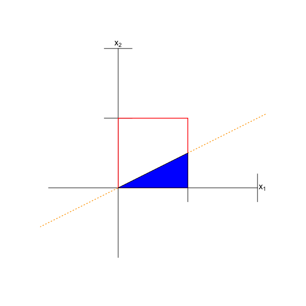
6.3 Covariance and Correlation
What to take away from this section:
The covariance between two random variables \(X_1\) and \(X_2\) is a metric that quantifies the amount of linear dependence between them.
The correlation between two random variables is the value of the covariance rescaled so as to lie between \(-1\) and 1; the rescaling aids interpretation.
Uncorrelated random variables (ones for which the value of the correlation is zero) are not necessarily independent random variables, but independent random variables are uncorrelated.
The covariance between two random variables \(X_1\) and \(X_2\) is a metric that quantifies the amount of linear dependence between them. (Other metrics of dependence, such as mutual information, are beyond the scope of this book.) It is defined as \[ {\rm Cov}(X_1,X_2) = E[(X_1-\mu_1)(X_2-\mu_2)] \,, \] but one rarely uses this expression, as there is a shortcut formula: \[\begin{align*} {\rm Cov}(X_1,X_2) &= E[X_1X_2 - X_1\mu_2 - X_2\mu_1 + \mu_1\mu_2] \\ &= E[X_1X_2] - \mu_2E[X_1] - \mu_1E[X_2] + \mu_1\mu_2 \\ &= E[X_1X_2] - E[X_2]E[X_1] - E[X_1]E[X_2] + E[X_1]E[X_2] \\ &= E[X_1X_2] - E[X_1]E[X_2] \,. \end{align*}\] In the previous section, we saw that \(E[X_1X_2] = E[X_1]E[X_2]\) if \(X_1\) and \(X_2\) are independent random variables. Thus independent random variables have no covariance, which makes sense: independent random variables would have by definition no linear dependence. However, it is not true that \(E[X_1X_2] = E[X_1]E[X_2]\) implies that \(X_1\) and \(X_2\) are independent random variables…it just implies there is no linear dependence between the two variables. See Figure 6.4.
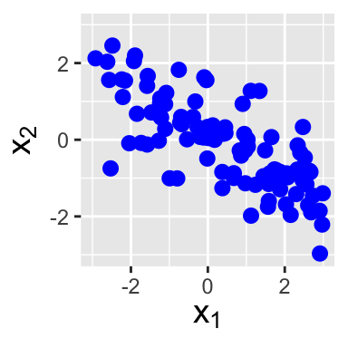
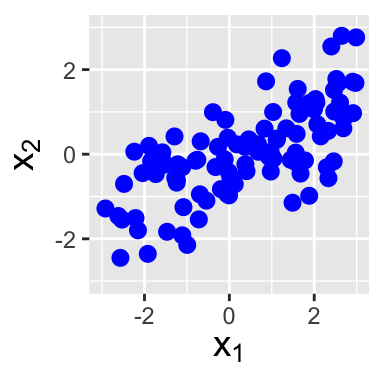
Covariance is not necessarily an optimal metric for expressing linear dependence, as its value is not readily interpretable. To see this, assume we have the expression \((tX_1 - X_2)\) for some constant \(t\). Then \((tX_1-X_2)^2 \geq 0\) and \(E[(tX_1-X_2)^2] \geq 0\). Thus \[\begin{align*} E[(tX_1-X_2)^2] &= E[t^2X_1^2 - 2tX_1X_2 + X_2^2] \\ &= E[X_1^2] t^2 - 2E[X_1X_2] t + E[X_2^2] \\ &= a t^2 + b t + c \geq 0 \,. \end{align*}\] (Recall that expected values are constants, and not themselves random variables.) The key here is that if \(a t^2 + b t + c = 0\), there is one real root to this quadratic equation, while if \(a t^2 + b t + c > 0\), there are no real roots. Thus the discriminant, \(b^2 - 4ac\), must be \(\leq 0\), and so \[\begin{align*} b^2 - 4ac &= 4 (E[X_1X_2])^2 - 4 E[X_1^2] E[X_2^2] \leq 0 \\ \Rightarrow& (E[X_1X_2])^2 \leq E[X_1^2] E[X_2^2] \,. \end{align*}\] At this point, the reader might ask “well, what about this?” The expression to the left above, \((E[X_1X_2])^2\), is \([{\rm Cov}(X_1,X_2)]^2\) when \(\mu_1 = \mu_2 = 0\), while the expression to the right, \(E[X_1^2] E[X_2^2]\), is \(V[X_1]V[X_2]\) when \(\mu_1 = \mu_2 = 0\). Thus \[ \vert {\rm Cov}(X_1,X_2) \vert \leq \sqrt{V[X_1]V[X_2]} = \sigma_1 \sigma_2 \,, \] or \(- \sigma_1 \sigma_2 \leq {\rm Cov}(X_1,X_2) \leq \sigma_1 \sigma_2\). The fact that we may not know immediately the value of \(\sigma_1 \sigma_2\) is what makes any numerical value of \({\rm Cov}(X_1,X_2)\) hard to interpret.
Thus we conventionally turn to an alternate expression of linear dependence, the correlation coefficient: \[ \rho_{X_1,X_2} = \frac{{\rm Cov}(X_1,X_2)}{\sigma_1\sigma_2} \Rightarrow -1 \leq \rho \leq 1 \,. \] If \(\rho_{X_1,X_2} < 0\), then an increase in the sampled value of \(X_1\) is associated with, on average, a smaller sampled value of \(X_2\), i.e., \(X_1\) and \(X_2\) are negatively correlated…whereas if \(\rho_{X_1,X_2} > 0\), larger sampled values for \(X_1\) are associated on average with larger sampled values of \(X_2\), i.e., \(X_1\) and \(X_2\) are positively correlated.
(We note that we have actually seen \(\rho_{X_1,X_2}\) before, in Chapter 2, when we introduced correlation as a metric of the strength of linear association as measured in simple linear regression. Recall that we estimate \(\rho_{X_1,X_2}\) with, e.g., the Pearson correlation coefficient \(R\), and that we use coefficient of determination \(R^2\) to quantify the usefulness of the linear regression model. See Figure 6.5.)
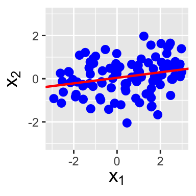
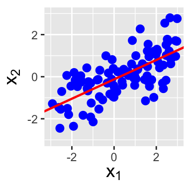
Let’s suppose we are given \(n\) correlated random variables \(\{X_1,\ldots,X_n\}\), and we define the sum \(Y = \sum_{i=1}^n a_i X_i\). Furthermore, let’s assume we know the pdf/pmf, expected value, and variance of each of the \(X_i\)’s. What do we know about the distribution of \(Y\)? With work, we might be able to determine its pdf or pmf, but we would have to go beyond the method of moment-generating functions because that method requires the random variables to be independent of each other. We will not do that here. However, we can determine the expected value of \(Y\): \[ E[Y] = E\left[ \sum_{i=1}^n a_i X_i \right] = \sum_{i=1}^n a_i E[X_i] \,. \] Dependencies between the \(X_i\)’s does not affect this equality. As for the variance of \(Y\)…
We start by encapsulating the information about the covariances between each variable pair into a covariance matrix. (See Chapter 08 for a short introduction to matrices and their basic use.) For \(n\) random variables, the \(n \times n\) covariance matrix \(\boldsymbol{\Sigma}\) is \[ \boldsymbol{\Sigma} = \left[ \begin{array}{ccc} {\rm Cov}(X_1,X_1) & \cdots & {\rm Cov}(X_1,X_n) \\ \vdots & \ddots & \vdots \\ {\rm Cov}(X_n,X_1) & \cdots & {\rm Cov}(X_n,X_n) \end{array} \right] = \left[ \begin{array}{ccc} V[X_1] & \cdots & {\rm Cov}(X_1,X_n) \\ \vdots & \ddots & \vdots \\ {\rm Cov}(X_n,X_1) & \cdots & V[X_n] \end{array} \right] \,. \] We note that the diagonal of this matrix (the elements from the upper left corner to the lower right corner) contains the individual variances, since Cov(\(X_i,X_i\)) = \(V[X_i]\), and that because Cov(\(X_i,X_j\)) = Cov(\(X_j,X_i\)), the matrix is symmetric about the diagonal.
Now, let \(a^T = [ a_1 ~ a_2 ~ \ldots a_n ]\) be the \(1 \times n\) matrix (or transposed vector) of coefficients. Then: \[ V[Y] = a^T \boldsymbol{\Sigma} a \,. \] Nice and compact! Let’s compare this to the equivalent expression that does not utilize matrices: \[\begin{align*} V[Y] &= \left[ a_1 ~ \ldots ~ a_n \right] \left[ \begin{array}{ccc} V[X_1] & \cdots & {\rm Cov}(X_1,X_n) \\ \vdots & \ddots & \vdots \\ {\rm Cov}(X_n,X_1) & \cdots & V[X_n] \end{array} \right] \left[ \begin{array}{c} a_1 \\ \vdots \\ a_n \end{array} \right] \\ &= \sum_{i=1}^n a_i^2 V[X_i] + 2\sum_{i=1}^{n-1} \sum_{j=i+1}^n a_i a_j {\rm Cov}(X_i,X_j) \,. \end{align*}\] Note that we can derive this expression directly using the Law of the Unconscious Statistician: \[\begin{align*} V[Y] = E[Y^2] - (E[Y])^2 = E[(Y - E[Y])^2] &= E\left[ \left( \sum_{i=1}^n a_i X_i - \sum_{i=1}^n a_i \mu_i \right)^2 \right] \\ &= E\left[ \left(\sum_{i=1}^n a_i(X_i - \mu_i) \right)^2 \right] \,. \end{align*}\] Let’s look at this for a moment. If we have, e.g., \(Y = a_1X_1+a_2X_2\), then \[\begin{align*} (a_1X_1+a_2X_2)^2 &= a_1^2X_1^2 + a_2^2X_2^2 + a_1a_2X_1X_2 + a_2a_1X_2X_1 \\ &= \sum_{i=1}^2 a_i^2 X_i^2 + 2a_1a_2X_1X_2 \\ &= \sum_{i=1}^2 a_i^2 X_i^2 + 2 \sum_{i=1}^{2-1} \sum_{j=i+1}^2 a_i a_j X_i X_j \,. \end{align*}\] Recognizing that the 2’s in the summation bounds would be the sample size \(n\) in general, we can write that \[ \left(\sum_{i=1}^n a_i X_i\right)^2 = \sum_{i=1}^n a_i^2 X_i^2 + 2 \sum_{i=1}^{n-1} \sum_{j=i+1}^n a_i a_j X_i X_j \,. \] So, picking up where we left off… \[\begin{align*} V[Y] &= E\left[ \left(\sum_{i=1}^n a_i(X_i - \mu_i) \right)^2 \right] \\ &= E\left[ \sum_{i=1}^n a_i^2(X_i-\mu_i)^2 + 2 \sum_{i=1}^{n-1} \sum_{j=i+1}^n a_i a_j (X_i - \mu_i) (X_j - \mu_2) \right] \\ &= \sum_{i=1}^n a_i^2 E\left[(X_i-\mu_i)^2\right] + 2 \sum_{i=1}^{n-1} \sum_{j=i+1}^n a_i a_j E\left[(X_i - \mu_i) (X_j - \mu_2) \right] \\ &= \sum_{i=1}^n a_i^2 V[X_i] + 2 \sum_{i=1}^{n-1} \sum_{j=i+1}^n a_i a_j \mbox{Cov}(X_i,X_j) \,. \end{align*}\]
6.3.1 Correlation of Two Discrete Random Variables
Let \(X_1\) and \(X_2\) have the following joint probability mass function \(p_{X_1,X_2}(x_1,x_2)\):
| \(x_2 = 0\) | \(x_2 = 1\) | \(x_2 = 2\) | |
| \(x_1 = 1\) | 0.20 | 0.30 | 0.00 |
| \(x_1 = 2\) | 0.40 | 0.00 | 0.10 |
What is the correlation between \(X_1\) and \(X_2\)?
In an example above, we determined that \(E[X_1X_2] = 0.7\). This is but one piece of the correlation puzzle: we also need to determine \(E[X_1]\) and \(E[X_2]\) along with \(V[X_1]\) and \(V[X_2]\). \[\begin{align*} E[X_1] &= \sum_{x_1} \sum_{x_2} x_1 p_{X_1,X_2}(x_1,x_2) \\ &= 1 \times 0.20 + 1 \times 0.30 + 2 \times 0.40 + 2 \times 0.10 = 1.50 \\ \\ E[X_1^2] &= \sum_{x_1} \sum_{x_2} x_1^2 p_{X_1,X_2}(x_1,x_2) \\ &= 1^2 \times 0.20 + 1^2 \times 0.30 + 2^2 \times 0.40 + 2^2 \times 0.10 = 2.50 \\ \\ E[X_2] &= \sum_{x_2} \sum_{x_2} x_2 p_{X_1,X_2}(x_1,x_2) \\ &= 1 \times 0.30 + 2 \times 0.10 = 0.50 \\ \\ E[X_2^2] &= \sum_{x_2} \sum_{x_2} x_2^2 p_{X_1,X_2}(x_1,x_2) \\ &= 1^2 \times 0.30 + 2^2 \times 0.10 = 0.70 \,. \end{align*}\] Hence Cov(\(X_1,X_2\)) = \(E[X_1X_2] - E[X_1]E[X_2] = 0.70 - 0.75 = -0.05\), while \(V[X_1] = E[X_1^2] - (E[X_1])^2 = 2.50 - 2.25 = 0.25\) and \(V[X_2] = E[X_2^2] - (E[X_2])^2 = 0.70 - 0.25 = 0.45\).
Thus the correlation between \(X_1\) and \(X_2\) is \[ \rho_{X_1,X_2} = \frac{\mbox{Cov}(X_1,X_2)}{\sqrt{V[X_1]V[X_2]}} = \frac{-0.05}{\sqrt{0.25 \cdot 0.45}} = -0.149 \,. \] \(X_1\) and \(X_2\) are (relatively weakly) negatively correlated: increasing \(X_1\) leads to slightly decreased values of \(X_2\), on average.
6.3.2 Correlation of the Sum of Two Discrete Random Variables
Let \(X_1\) and \(X_2\) be the random variables defined in the previous example, and let \(Y = X_1 - X_2\). What is \(V[Y]\)?
Because only two random variables are involved, we will first do the calculation using the summation form given at the end of the section: \[\begin{align*} V[Y] &= \sum_{i=1}^n a_i^2 V[X_i] + 2\sum_{i=1}^{n-1} \sum_{j=i+1}^n a_i a_j {\rm Cov}(X_i,X_j) \\ &= 1^2 V[X_1] + (-1)^2 V[X_2] + 2 (1) (-1) \mbox{Cov}(X_1,X_2) \\ &= V[X_1] + V[X_2] - 2 \mbox{Cov}(X_1,X_2) \\ &= 0.25 + 0.45 - 2(-0.05) = 0.80 \,. \end{align*}\]
Here is the same calculation using
R.
Code
a <- c(1, -1)
Sigma <- matrix(c(0.25, -0.05, -0.05, 0.45), nrow = 2) # fill column-by-column
t(a) %*% Sigma %*% a [,1]
[1,] 0.8Note that
ais by default a column vector, and thus must be transposed via thet()function, and that%*%is the matrix multiplication operator.
6.3.4 Covariance of Multinomial Random Variables
In Chapter 3, we introduce the multinomial distribution, which governs experiments in which we sample data that can \(m\) different discrete values. The probability mass function is \[ p_{X_1,\ldots,X_m}(x_1,\ldots,x_m \vert p_1,\ldots,p_m) = \frac{k!}{x_1! \cdots x_m!}p_1^{x_1}\cdots p_m^{x_m} \,, \] where \(x_i\) represents the number of times outcome \(i\) is observed in \(k\) trials, and where \(p_i\) is the probability of observing outcome \(i\). As stated in Chapter 3, the distribution for each random variable \(X_i\) is Binomial(\(k,p_i\)), but the \(X_i\)’s are not independent; because \(\sum_{i=1}^m X_i = k\), increase the value of one of the random variables would lead the values of the others to decrease on average. Here we will derive the result that was quoted in Chapter 3, namely that Cov(\(X_i\),\(X_j\)) = \(-kp_ip_j\) for \(i \neq j\).
Because \(X_i\) and \(X_j\) are each binomially distributed random variables, we can view them as sums of Bernoulli distributed random variables, i.e., we can write \[ X_i = \sum_{l=1}^k U_l ~~\mbox{and}~~ X_j = \sum_{l=1}^k V_l \,, \] where \(U_l \sim\) Bernoulli(\(p_i\)) and \(V_l \sim\) Bernoulli(\(p_j\)), and where \(l\) is an index representing the \(l^{\rm th}\) trial.
The covariance of \(X_i\) and \(X_j\) is thus \[\begin{align*} \mbox{Cov}(X_i,X_j) &= E[X_iX_j] - E[X_i]E[X_j] \\ &= E[X_iX_j] - (k p_i)(k p_j) \\ &= E[X_iX_j] - k^2p_ip_j \,, \end{align*}\] where \[\begin{align*} E[X_iX_j] &= E[U_1V_1 + \cdots + U_1V_k + U_2V_1 + \cdots + U_2V_k + \cdots U_kV_1 + \cdots + U_kV_k] \\ &= E[U_1V_1] + E[U_1V_2] + \cdots + E[U_kV_k] \,. \end{align*}\] There are \(k^2\) terms in this summation overall. Because we cannot observe two different outcomes in the same trial, \(E[U_iV_i] = 0\) for all indices \(i \in [1,k]\). As for the other \(k^2 - k\) terms…let’s starting by looking at one of them: \[ E[U_1V_2] = E[U_1]E[V_2] = p_ip_j \,. \] This result holds because the results of any two trials in a multinomial experiment are independent random variables. Thus the sum of the remaining \(k^2-k\) terms is \((k^2-k)p_ip_j\), and thus \[ \mbox{Cov}(X_i,X_j) = (k^2-k)p_ip_j - k^2p_ip_j = -kp_ip_j \,. \]
6.3.5 Tying Covariance Back to Simple Linear Regression
Above, we point out how \(R^2\) is related to the correlation coefficient between the \(x_i\)’s and \(Y_i\)’s. Here, we extend that discussion to the determinination of the correlation coefficient between \(\hat{\beta}_0\) and \(\hat{\beta}_1\) in simple linear regression.
When discussing simple linear regression in Chapter 2, we give formulae for the variances of both \(V[\hat{\beta}_0]\) and \(V[\hat{\beta}_1]\). However, now that we know about the concept of covariance, we can ask a question that we did not ask then: are \(\hat{\beta}_0\) and \(\hat{\beta}_1\) independent random variables? The answer is: of course they are not; if we have a set of data that we are trying to draw a line through, it should be intuitively obvious that changing the intercept of the line will lead to its slope having to change as well in order to (re-)optimize the sum of squared errors. So: the covariance between \(\hat{\beta}_0\) and \(\hat{\beta}_1\) is non-zero…but how do we determine it?
The standard method of determining covariance involves the calculation of the so-called variance-covariance matrix. (To be clear, this is nomenclature that is specific to regression contexts.) Stated without derivation or proof, that matrix is given by the following: \[ \boldsymbol{\Sigma} = \sigma^2 (\mathbf{X}^T\mathbf{X})^{-1} \,, \] where \(\sigma^2\) is the true variance (which, as you will recall, we assume does not vary as a function of \(x\)), \(\mathbf{X}\) is the design matrix \[ \mathbf{X} = \left( \begin{array}{cc} 1 & x_1 \\ 1 & x_2 \\ \vdots & \vdots \\ 1 & x_n \end{array} \right) \,, \] the superscript \(T\) denotes the matrix transpose, and where the superscript \(-1\) denotes matrix inversion. The column of 1’s in the design matrix represents what we multiply \(\beta_0\) by in the model, while the column of \(x_i\)’s represents what we multiply \(\beta_1\) by. As far as \(\sigma^2\) is concerned…we generally never know this quantity, so we plug in \(\widehat{\sigma^2}\) in place of \(\sigma^2\) above.
Let’s demonstrate how this works using the same data as we used to talk through the output from the
Rfunctionlm()in Chapter 2.
Code
set.seed(202)
x <- runif(40, min = 0, max = 10)
Y <- 4 + 0.5 * x + rnorm(40)
lm.out <- lm(Y ~ x)
summary(lm.out)
Call:
lm(formula = Y ~ x)
Residuals:
Min 1Q Median 3Q Max
-2.00437 -0.53068 0.04523 0.40338 2.47660
Coefficients:
Estimate Std. Error t value Pr(>|t|)
(Intercept) 4.5231 0.3216 14.063 < 2e-16 ***
x 0.4605 0.0586 7.859 1.75e-09 ***
---
Signif. codes: 0 '***' 0.001 '**' 0.01 '*' 0.05 '.' 0.1 ' ' 1
Residual standard error: 0.9792 on 38 degrees of freedom
Multiple R-squared: 0.6191, Adjusted R-squared: 0.609
F-statistic: 61.76 on 1 and 38 DF, p-value: 1.749e-09Recall that the estimate of \(\sigma\) is given by the
Residual standard error, which here is 0.9792, so \(\widehat{\sigma^2} = 0.9587\). We can extract this from the objectlm.out:
Code
hat.sigma <- summary(lm.out)$sigma
hat.sigma2 <- hat.sigma^2(To determine what quantities are available in an
Rlist output by a function such assummary(lm), we can typenames(summary(lm)). Here,names()indicates thatsigmais an accessible list element.) We can set up the design matrix as follows:
Code
X <- cbind(rep(1, 40), x)“cbind” means “column bind”: the first argument is a vector of 1’s that is bound to the second argument, which is the vector of \(x_i\)’s, thus creating a matrix with 40 rows and 2 columns. We can now compute the variance-covariance matrix:
Code
hat.sigma2 * solve(t(X) %*% X) x
0.10344444 -0.01652116
x -0.01652116 0.00343436The function
t()returns the transpose of \(X\) (a matrix with 2 rows and 40 columns), whilesolve()is the matrix inversion function.
What do we see above? First, if we take the square roots of the matrix elements at upper left and lower right (i.e., along the matrix diagonal), we get \[ se(\hat{\beta}_0) = \sqrt{0.1034} = 0.3216 ~~~ \mbox{and} ~~~ se(\hat{\beta}_0) = \sqrt{0.0034} = 0.0586 \,. \] These quantities match the values in the
Std. Errorcolumn of the coefficient table output bysummary(). Good! In addition, however, we see the off-diagonal element \(-0.0165\): this is Cov(\(\hat{\beta}_0,\hat{\beta}_1\)). The negative sign makes sense: if we increase the intercept, we have to make the slope smaller (i.e., more negative) to optimize that coefficient. The correlation is given by \[ \frac{\mbox{Cov}(\hat{\beta}_0,\hat{\beta}_1)}{se(\hat{\beta}_0) \cdot se(\hat{\beta}_1)} = \frac{-0.0165}{0.3216 \cdot 0.0586} = -0.8755 \,. \] We see immediately that the intercept and slope are strongly (and negatively) correlated.
In “real-life” situations, do we need to carry out the chain of computations we carry out above? No…because
Rprovides wrapper functions to help us:
Code
(Sigma <- vcov(lm.out)) # compute the variance-covariance matrix (Intercept) x
(Intercept) 0.10344444 -0.01652116
x -0.01652116 0.00343436Code
cov2cor(Sigma) # convert the covariance to correlation (Intercept) x
(Intercept) 1.0000000 -0.8765245
x -0.8765245 1.0000000(We note that the difference between the correlation coefficient computed above and that output by
cov2cor()is entirely due to round-off error.)
6.3.6 Tying Covariance to Simple Logistic Regression
In the last example, we state that the variance-covariance matrix for simple linear regression is given by \[ \boldsymbol{\Sigma} = \sigma^2 (\mathbf{X}^T\mathbf{X})^{-1} \,. \] A similar expression exists for logistic regression: \[ \boldsymbol{\Sigma} = (\mathbf{X}^T \mathbf{W} \mathbf{X})^{-1} \,, \] where the diagonal weight matrix \(\mathbf{W}\) is given by \[ \mathbf{W} = \left( \begin{array}{cccc} \frac{\exp(\hat{\beta}_0 + \hat{\beta}_1x_1)}{(1+\exp(\hat{\beta}_0 + \hat{\beta}_1x_1))^2} & 0 & \cdots & 0 \\ 0 & \frac{\exp(\hat{\beta}_0 + \hat{\beta}_1x_2)}{(1+\exp(\hat{\beta}_0 + \hat{\beta}_1x_2))^2} & \cdots & 0 \\ \vdots & \vdots & \ddots & \vdots \\ 0 & 0 & \cdots & \frac{\exp(\hat{\beta}_0 + \hat{\beta}_1x_n)}{(1+\exp(\hat{\beta}_0 + \hat{\beta}_1x_n))^2} \end{array} \right) \,. \] Note that if we were to replace every non-zero matrix entry above with \(1/\sigma^2\), we would recover the expression \(\boldsymbol{\Sigma} = \sigma^2 (\mathbf{X}^T\mathbf{X})^{-1}\).
Below, we show how to populate the \(\mathbf{W}\) matrix and use it to determine the variance-covariance matrix.
Code
# run simple logistic regression on training dataset
log.out <- glm(class ~ col.iz, data = df.train, family = binomial)
summary(log.out)
Call:
glm(formula = class ~ col.iz, family = binomial, data = df.train)
Coefficients:
Estimate Std. Error z value Pr(>|z|)
(Intercept) 0.16841 0.09265 1.818 0.06911 .
col.iz -0.96729 0.31051 -3.115 0.00184 **
---
Signif. codes: 0 '***' 0.001 '**' 0.01 '*' 0.05 '.' 0.1 ' ' 1
(Dispersion parameter for binomial family taken to be 1)
Null deviance: 970.41 on 699 degrees of freedom
Residual deviance: 958.16 on 698 degrees of freedom
AIC: 962.16
Number of Fisher Scoring iterations: 4Code
hat.beta0 <- log.out$coefficients[1]
hat.beta1 <- log.out$coefficients[2]
e <- exp(hat.beta0 + hat.beta1 * df.train$col.iz)
W <- diag(e / (1 + e)^2)
X <- cbind(rep(1, nrow(df.train)), df.train$col.iz)
(Sigma <- solve(t(X) %*% W %*% X)) [,1] [,2]
[1,] 0.008584293 -0.01635715
[2,] -0.016357147 0.09641920Code
sqrt(Sigma[1, 1])[1] 0.09265146Code
sqrt(Sigma[2, 2])[1] 0.3105144We see that the diagonal elements match the standard errors output by the
summary()function. We can find the correlation between \(\hat{\beta}_0\) and \(\hat{\beta}_1\) by using the functioncov2cor():
Code
cov2cor(Sigma) [,1] [,2]
[1,] 1.0000000 -0.5685564
[2,] -0.5685564 1.0000000The correlation is not as strong as we observed above in our simple linear regression example, but in absolute terms we would still say that \(\hat{\beta}_0\) and \(\hat{\beta}_1\) are strongly negatively correlated.
6.4 Marginal and Conditional Distributions
What to take away from this section:
In a bivariate setting, a marginal distribution is the distribution of the random variable \(X_1\) (or \(X_2\)), irrespective of the value of the other random variable.
In the same setting, a conditional distribution is the distribution of the random variable \(X_1\) (or \(X_2\)) given specific conditions on the value of the other random variable.
Let’s say that we perform an experiment where we sample a pair of random variables \((X_1,X_2)\) from a bivariate distribution, where \(X_1\) and \(X_2\) are dependent random variables. Despite doing this, we might ultimately find that we are only interested in how \(X_1\) is distributed, regardless of the sampled value of \(X_2\) (or vice-versa). The distribution that we’d like to derive is dubbed a marginal distribution.
To compute the marginal distribution for \(X_1\) when given a bivariate pdf \(f_{X_1,X_2}(x_1,x_2)\), we integrate over all values of \(x_2\): \[ f_{X_1}(x_1) = \int_{x_2} f_{X_1,X_2}(x_1,x_2) dx_2 \,, \] while for a bivariate pmf, we simply replace integration with summation, e.g., \[ p_{X_1}(x_1) = \sum_{x_2} p_{X_1,X_2}(x_1,x_2) \,. \] (If we are interested in computing the marginal distribution for \(X_2\), we would simply swap the indices 1 and 2 above.) An important thing to keep in mind is that a marginal pdf (or pmf) is a pdf (or pmf), meaning that it is like any other pdf (or pmf): it is non-negative and it integrates (or sums) to one, it has an expected value and a standard deviation, etc.
A related, albeit narrower question to the one motivating the computation of marginals is: what is the distribution of \(X_1\) when \(X_2 = x_2\)? (It is narrower in the sense that for a marginal, we do not care about the sampled value of \(X_2\), while here, we do.) This distribution is dubbed a conditional distribution, and it is defined as follows: \[ f_{X_1 \vert X_2}(x_1 \vert x_2) = \frac{f_{X_1,X_2}(x_1,x_2)}{f_{X_2}(x_2)} \,. \] For a bivariate pmf, the expression is similar. As was the case with a marginal distribution, a conditional pdf (or pmf) is a pdf (or pmf). One might notice immediately the similarity between this expression and the one defining conditional probability in Chapter 1: \(p(A \vert B) = p(A \cap B)/p(B)\). This is not coincidental. For marginals, the analogous probability expression is \(p(A) = \sum_i p(A \vert B_i) p(B_i)\), i.e., the law of total probability! If this is not immediately evident, note that we can replace the \(f_{X_1,X_2}(x_1,x_2)\) in the marginal integral with \(f_{X_1 \vert X_2}(x_1 \vert x_2) f_{X_2}(x_2)\). Then we can see how \(x_1\) takes the place of \(A\) and \(x_2\) takes the places of \(B_i\).)
Why do we divide by a marginal distribution when deriving a conditional distribution? The answer is simple: if we do not, then there is no guarantee that the conditional pdf or pmf will integrate or sum to one. Finding the conditional distribution is akin to chopping through the bivariate pdf at a particular value of \(x_1\) or \(x_2\), and tracing the pdf along the chopped edge. This traced-out function will be non-negative, but it will not necessarily integrate to one. The division by the marginal acts to “normalize” the traced-out function, i.e., the division raises or lowers it such that it subsequently will integrate to one.
As a final note, we will mention that if \(X_1\) and \(X_2\) are independent random variables, then, e.g.,
- \(f_{X_1,X_2}(x_1,x_2) = f_{X_1}(x_1) f_{X_2}(x_2)\); and
- \(f_{X_1 \vert X_2}(x_1 \vert x_2) = f_{X_1}(x_1)\) and \(f_{X_2 \vert X_1}(x_2 \vert x_1) = f_{X_2}(x_2)\)
The first bullet point above shows the result that we look for when establishing the independence of two random variables mathematically: we compute the marginals for each variable, take the product of marginals, and see if it matches the original bivariate function. However, this conventional textbook approach to establishing independence is unnecessary, as it is sufficient to examine the domain of the bivariate function and to determine if we can factorize it into separate functions of \(x_1\) and \(x_2\).
6.4.1 Marginal and Conditional Distributions for a Bivariate PMF
Let \(X_1\) and \(X_2\) have the following joint probability mass function \(p_{X_1,X_2}(x_1,x_2)\):
| \(x_2 = 0\) | \(x_2 = 1\) | \(x_2 = 2\) | |
| \(x_1 = 1\) | 0.20 | 0.30 | 0.00 |
| \(x_1 = 2\) | 0.40 | 0.00 | 0.10 |
What is the marginal distribution \(p_{X_2}(x_2)\) and the conditional distribution \(p_{X_1 \vert X_2}(x_1 \vert x_2)\)?
When probability masses are involved, the marginal distribution is derived by summing over an axis (here, \(x_1\)): \[ p_{X_2}(x_2) = \sum_{x_1} p_{X_1,X_2}(x_1,x_2) \,. \] For this problem, the summation can be done by inspection, yielding the following marginal distribution:
| \(x_2 = 0\) | \(x_2 = 1\) | \(x_2 = 2\) |
| 0.60 | 0.30 | 0.10 |
As stated in the text above, a marginal pmf is a pmf, meaning that for instance the values sum to 1, and we can compute quantities like \(E[X_2] = 0 \times 0.6 + 1 \times 0.3 + 2 \times 0.1 = 0.5\).
As for the conditional distribution, we have the following expression \[ p_{X_1 \vert X_2}(x_1 \vert x_2) = \frac{p_{X_1,X_2}(x_1,x_2)}{p_{X_2}(x_2)} \,, \] which in practice means we take the original bivariate table and divide each row by the marginal for \(x_2\), if we are conditioning on \(x_2\), or divide each column by the marginal for \(x_1\), if we are conditioning on \(x_1\). Here, we condition on \(x_2\), so our result is
| \(x_2 = 0\) | \(x_2 = 1\) | \(x_2 = 2\) | |
| \(x_1 = 1\) | 0.20/0.60 = 0.33 | 0.30/0.30 = 1.00 | 0.00/0.10 = 0.00 |
| \(x_1 = 2\) | 0.40/0.60 = 0.67 | 0.00/0.30 = 0.00 | 0.10/0.10 = 1.00 |
In such a table, the values in the individual columns all need to sum to one: given some value of \(x_2\), we will with probability 1 sample a value of \(x_1\). (As should be clear, if we condition on \(x_1\) instead, we’d generate a table in which the values in each row would sum to 1.)
6.4.2 Marginal and Conditional Distributions for a Bivariate PDF
Let \(X_1\) and \(X_2\) have the following joint probability density function: \[ f_{X_1,X_2}(x_1,x_2) = 6(1-x_2) \,, \] with \(0 \leq x_1 \leq x_2 \leq 1\). What is the marginal distribution \(f_{X_1}(x_1)\)? What is the conditional distribution \(f_{X_2 \vert X_l}(x_2 \vert x_1)\)?
Refer back to Figure 6.1. The marginal distribution is defined as a function of \(x_1\), so we integrate over \(x_2\)…which means that for any given value of \(x_1\), the bounds of integration are \(x_1 = x_2\) to 1: \[ f_{X_1}(x_1) = \int_{x_1}^1 6(1-x_2) dx_2 \,. \] Why is the lower bound \(x_1\) instead of \(x_2\)? They are interchangable, but if we use \(x_2\), then our final result would not be a function of \(x_1\)! In general, if we integrate along one axis, the integral bounds should be expressed in terms of the other axis. To continue: \[\begin{align*} f_{X_1}(x_1) &= \int_{x_1}^1 6(1-x_2) dx_2 \\ &= 6 \left[ \int_{x_1}^1 dx_2 - \int_{x_1}^1 x_2 dx_2 \right] \\ &= 6 \left[ \left. x_2 \right|_{x_1}^1 - \left. \frac{x_2^2}{2} \right|_{x_1}^1 \right] \\ &= 6 \left[ 1 - x_1 - \left(\frac{1}{2}-\frac{x_1^2}{2} \right) \right] \\ &= 3 - 6x_1 + 3x_1^2 = 3(1-x_1)^2 \,, \end{align*}\] for \(0 \leq x_1 \leq 1\). See Figure 6.7. Given the functional form and domain, we can recognize this as a Beta(1,3) distribution. (Such recognition is helpful if, for instance, we were to ask for the expected value of \(X_1\). Rather than doing yet another integral, we’d write that \(E[X_1] = \alpha/(\alpha+\beta) = 1/4\).)
As for the conditional distribution…once we have the marginal, this is easy to write down: \[ f_{X_2 \vert X_1}(x_2 \vert x_1) = \frac{f_{X_1,X_2}(x_1,x_2)}{f_{X_1}(x_1)} = \frac{6(1-x_2)}{3(1-x_1)^2} = \frac{2(1-x_2)}{(1-x_1)^2} \,. \] Refering back to Figure 6.1, we note that this conditional expression can only be non-zero along the line from \(x_2 = x_1\) to 1. So the domain of this conditional distribution is \(x_2 \vert x_1 \in [x_1,1]\). See Figure 6.7.
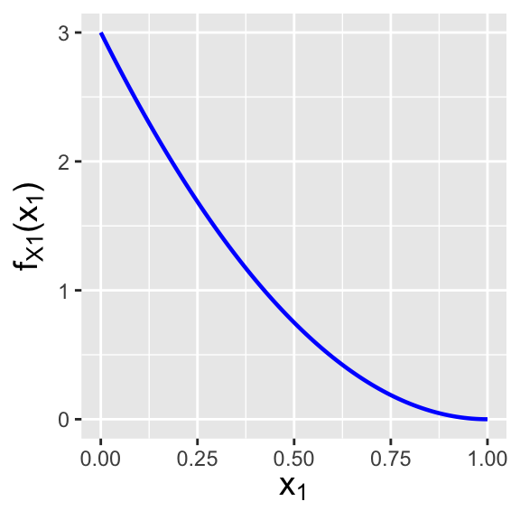
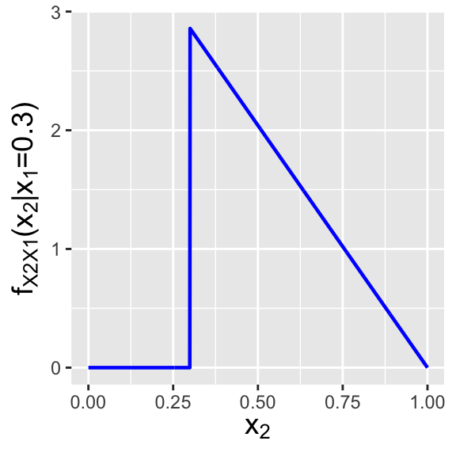
6.4.3 Mutual Information
Covariance and correlation are measures of linear dependence. Is there a conventional method for quantifying dependence more generally?
Yes: the metric of mutual information, which quantifies the amount of information that one obtain about one random variable by observing the other. The theoretical details of mutual information are embedded within information theory and are thus beyond the scope of this book, but we can easily write down, e.g., the mutual information held by two continuously varying random variables \(X_1\) and \(X_2\): \[\begin{align*} I(X_1,X_2) = \int_{x_2} \int_{x_1} f_{X_1,X_2}(x_1,x_2) \log\left(\frac{f_{X_1,X_2}(x_1,x_2)}{f_{X_1}(x_1)f_{X_2}(x_2)}\right) dx_1 dx_2 \,. \end{align*}\] In practice, the integration required to compute \(I(X_1,X_2)\) can be difficult to carry out, but we can always fall back upon numerical integration with the
integral2()function introduced in an example above. Let’s suppose that our bivariate pdf is the one in the previous example: \[\begin{align*} f_{X_1,X_2}(x_1,x_2) &= 6(1-x_2) \\ f_{X_1}(x_1) &= 3(1-x_1)^2 \\ f_{X_2}(x_2) &= 6x_2(1-x_2) \,. \end{align*}\] Then the mutual information is thus
Code
library(pracma)
# Define the (finite) domain
x1min <- 0
x1max <- 1
x2min <- function(x1) { x1 } # the lower bound for x2 is the line x2=x1
x2max <- 1
# Determine I(X1, X2)
f <- function(x1, x2) {
-6 * (1 - x2) * log(3 * x2 * (1-x1)^2)
}
I <- integral2(f, x1min, x1max, x2min, x2max)$Q
cat("The value of I(X1, X2) is", round(I, 3), "\n")The value of I(X1, X2) is 0.401 Unlike the correlation coefficient \(\rho_{X_1,X_2}\), a mutual information value is not easily interpreted, beyond the fact that a non-zero value indicates dependence. The interested reader can learn more by examining how mutual information is tied to the individual, conditional, and joint entropies of pairs of random variables.
6.5 Conditional Expected Value and Variance
What to take away from this section:
In a bivariate setting, the conditional expected value and conditional variance are the expected value of and variance of, e.g., \(X_1\) given a conditional distribution \(f_{X_1 \vert X_2}(x_1,x_2)\).
The laws to total expectation and of total variance allow us to derive unconditional expected values and variances given their conditional counterparts.
As was stated above, a conditional pdf or pmf is a pdf or pmf…meaning that like a pdf or pmf, it has an expected value and a variance. For instance, the expected value of a conditional pdf \(f_{X_1 \vert X_2}(x_1 \vert x_2)\), or the conditional expected value, is \[ E[X_1 \vert X_2] = \int_{x_1} x_1 f_{X_1 \vert X_2}(x_1 \vert x_2) dx_1 \,. \] As you might expect, an analogous expression exists for bivariate pmfs: \(E[X_1 \vert X_2] = \sum_{x_1} p_{X_1 \vert X_2}(x_1 \vert x_2)\). Also, there are two important points to make here:
- While, e.g., \(E[X_1]\) is a constant, \(E[X_1 \vert X_2]\) is a random variable due to the randomness of \(X_2\)…that is, unless one specifies \(E[X_1 \vert X_2=x_2]\), which is constant because \(X_2\) is no longer random. Beware notation!
- One can generalize \(E[X_1 \vert X_2]\) in the manner of the Law of the Unconscious Statistician: \(E[g(X_1) \vert X_2] = \int_{x_1} g(x_1) f_{X_1 \vert X_2}(x_1 \vert x_2) dx_1\).
The definition of conditional variance builds off of that of the conditional expected value: \[\begin{align*} V[X_1 \vert X_2] &= E[(X_1-\mu_1)^2 \vert X_2] \\ &= E[X_1^2 \vert X_2] - (E[X_1 \vert X_2])^2 \\ &= \int_{x_1} x_1^2 f_{X_1 \vert X_2}(x_1 \vert x_2) dx_1 - \left[ \int_{x_1} x_1 f_{X_1 \vert X_2}(x_1 \vert x_2) dx_1 \right]^2 \,. \end{align*}\] As we can see in the second line above, the fact that we are dealing with a condition does not fundamentally change how variance is computed: the form of the shortcut formula is the same as before, just with the condition added.
Can one go from a conditional expected value to an unconditional expected value \(E[X_1]\)? Yes: intuitively, this involves averaging the values found for \(E[X_1 \vert X_2]\) over all possible values of \(x_2\), weighting each of these possible values by how relatively likely it is in the first place (i.e., in the case of a bivariate pdf, weighting each value of \(E[X_1 \vert X_2]\) by \(f_{X_2}(x_2)\)): \[\begin{align*} E[X_1] = E[E[X_1 \vert X_2]] &= \int_{x_2} f_{X_2}(x_2) E[X_1 \vert X_2] dx_2 \\ &= \int_{x_2} f_{X_2}(x_2) \int_{x_1} x_1 f_{X_1 \vert X_2}(x_1 \vert x_2) dx_1 dx_2 \\ &= \int_{x_2} \int_{x_1} x_1 f_{X_2}(x_2) f_{X_1 \vert X_2}(x_1 \vert x_2) dx_1 dx_2 \\ &= \int_{x_1} \int_{x_2} x_1 f_{X_1,X_2}(x_1,x_2) dx_2 dx_1 = E[X_1] \,. \end{align*}\]
As you might expect, given the conditional variance \(V[X_1 \vert X_2]\), we can compute the unconditional variance \(V[X_1]\)…and for this, it is simplest to begin by writing down that \[ V[X_1] = V[E[X_1 \vert X_2]] + E[V[X_1 \vert X_2]] \,. \] The intuitive interpretation of this equation is that it reflects that \(X_1\) can vary because the mean of \(X_1 \vert X_2\) can shift as a function of \(X_2\) (so we want to quantify how much \(E[X_1 \vert X_2]\) varies…giving the first term on the right above), but it can also vary due to being randomly distributed about the mean (so we want to quantify how much, on average, is that random variation…which gives the second term above). As one might guess, writing out the above expression in terms of integrals or summations over bivariate functions is going to be messy and thus we forego doing this here. (This might lead one to ask “how will we solve unconditional variance problems if expressions with integrals or summations are not provided?” It turns out there is an entire class of problems that we can solve without integration or summation, and we provide an example of a problem from that class below.)
Note that if \(X_1\) and \(X_2\) are independent, it follows that, e.g., \(E[X_1 \vert X_2] = E[X_1]\) and \(V[X_1 \vert X_2] = V[X_1]\). Let’s look at the latter expression. Above, we wrote that \(V[X_1] = V[E[X_1 \vert X_2]] + E[V[X_1 \vert X_2]]\). If \(X_1\) and \(X_2\) are independent, then \(E[X_1 \vert X_2]\) is a constant, and thus \(V[E[X_1 \vert X_2]] = 0\) (because a constant does not vary). In addition, \(V[X_1 \vert X_2]\) is a constant (it doesn’t vary as \(X_2\) changes) and thus \(E[V[X_1 \vert X_2]] = V[X_1 \vert X_2]\). So in the end, \(V[X_1] = 0 + V[X_1 \vert X_2] = V[X_1 \vert X_2]\).
6.5.1 Conditional and Unconditional Expected Value Given a Bivariate Distribution
Let \(X_1\) and \(X_2\) have the following joint probability density function: \[ f_{X_1,X_2}(x_1,x_2) = 6(1-x_2) \,, \] with \(0 \leq x_1 \leq x_2 \leq 1\) (see Figure 6.1). For this distribution, the marginal \(f_{X_2}(x_2)\) is \(6x_2(1-x_2)\) for \(x_2 \in [0,1]\), or a Beta(2,2) distribution, while the conditional distribution \(f_{X_1 \vert X_2}(x_1 \vert x_2)\) is \[ f_{X_1 \vert X_2}(x_1 \vert x_2) = \frac{f_{X_1,X_2}(x_1,x_2)}{f_{X_2}(x_2)} = \frac{6(1-x_2)}{6(1-x_2)x_2} = \frac{1}{x_2} \,, \] for \(x_1 \in [0,x_2]\). (The interested reader can verify these results!) What is \(E[X_1 \vert X_2]\) and what is \(E[X_1]\)?
For the conditional expected value, we have that \[\begin{align*} E[X_1 \vert X_2] &= \int_0^{x_2} x_1 f_{X_1 \vert X_2}(x_1 \vert x_2) dx_1 \\ &= \int_0^{x_2} \frac{x_1}{x_2} dx_1 \\ &= \frac{1}{x_2} \int_0^{x_2} x_1 dx_1 \\ &= \frac{1}{x_2} \left. \frac{x_1^2}{2} \right|_0^{x_2} = \frac{1}{x_2} \frac{x_2^2}{2} = \frac{x_2}{2} \,. \end{align*}\] It turns out that we did not necessarily have to do this integral, however. Note that the conditional expression is \(1/x_2\) for \(x_1 \in [0,x_2]\)…this is a uniform distribution! So we’d see, by inspection, that the conditional expected value is \(x_2/2\).
To determine the unconditional expected value \(E[X_1]\), we weight every possible value of \(E[X_1 \vert X_2]\) by the probability (density) that we would even observe \(X_2\) in the first place (which is the marginal distribution for \(X_2\)): \[\begin{align*} E[X_1] &= \int_0^1 f_{X_2}(x_2) E[X_1 \vert X_2] dx_2 \\ &= \int_0^1 6 x_2 (1 - x_2) \frac{x_2}{2} dx_2 \\ &= 3 \int_0^1 x_2^2 (1 - x_2) dx_2 \\ &= 3 B(3,2) = 3 \times 2! \times 1! / 4! = 1/4 \,. \end{align*}\]
6.5.2 Conditional and Unconditional Expected Value and Variance Given Two Univariate Distributions
Let’s look at the following problem: the number of homework assignments due in a given week, \(N\), varies from week to week and its value is sampled from a Poisson distribution with mean \(\lambda\). The time to complete any one homework assignment, \(X\), also varies, and its value is sampled from a Gamma distribution with parameter \(\alpha\) and \(\beta\) (and is the form of the Gamma with expected value \(\alpha\beta\) and variance \(\alpha\beta^2\)). Let \(T \vert N = \sum_{i=1}^N X_i\) be the total time spent completing \(N\) homework assignments. (Assume all the \(X_i\)’s are independent random variables.) What are \(E[T]\) and \(V[T]\)?
We first note that because we are working with two univariate distributions for which the expected value and variance are known, there is no need to, e.g., integrate. We simply need to identify \(E[T \vert N]\) and \(V[T \vert N]\) and work with those expressions directly.
We’ll start with the expected value: \[\begin{align*} E[T] &= E[E[T \vert N]] = E\left[E\left[\sum_{i=1}^N X_i\right]\right]\\ &= E\left[\sum_{i=1}^N E[X_i]\right] = E[N\alpha\beta] = \alpha \beta E[N] = \alpha\beta\lambda \,. \end{align*}\] Somewhat more complicated is the computation of the variance: \[\begin{align*} V[T] &= V[E[T \vert N]] + E[V[T \vert N]] \\ &= V[N \alpha \beta] + E\left[ V \left[ \sum_{i=1}^N X_i \right] \right] \\ &= \alpha^2 \beta^2 V[N] + E \left[ \sum_{i=1}^N V[X_i] \right] \\ &= \alpha^2 \beta^2 \lambda + E \left[ \sum_{i=1}^N \alpha \beta^2 \right] \\ &= \alpha^2 \beta^2 \lambda + E[N\alpha \beta^2 ] \\ &= \alpha^2 \beta^2 \lambda + \alpha \beta^2 E[N] \\ &= \alpha^2 \beta^2 \lambda + \alpha \beta^2 \lambda = \alpha (\alpha + 1) \beta^2 \lambda \,. \end{align*}\] Thus in any randomly chosen week, the time needed to complete homework is \(\alpha\beta\lambda\) on average, with standard deviation \(\sqrt{\alpha (\alpha + 1) \beta^2 \lambda}\).
6.6 The Multivariate Normal Distribution
What to take away from this section:
The multivariate normal distribution is the multivariate analogue of the normal distribution, and it is parameterized by a mean vector \(\boldsymbol{\mu} = \{\mu_1,\ldots,\mu_p\}\) and a covariance matrix \(\boldsymbol{\Sigma}\).
A marginal distribution for a multivariate normal is derived by simply keeping the elements of the mean vector \(\boldsymbol{\mu}\), and the rows and columns of the covariance matrix \(\boldsymbol{\Sigma}\), that are associated with the axes we are retaining; the marginal is itself a multivariate normal.
A conditional distribution for a multivariate normal is, like the marginal distribution, itself a multivariate normal, but with transformed mean vector \(\boldsymbol{\mu}\) and covariance matrix \(\boldsymbol{\Sigma}\).
The multivariate normal distribution is the most important one in multivariate settings, due in part to its role in the multivariate analogue of the central limit theorem: if we have a collection of \(n\) iid random vectors, where \(n\) is sufficiently large then the sample mean vector is going to be approximately multivariate normally distributed.
The joint probability density function for the multivariate normal is given by \[ f_{\mathbf{X}}(\mathbf{x}) = \frac{1}{\sqrt{(2\pi)^p \vert \boldsymbol{\Sigma} \vert}} \exp\left(-\frac12 (\mathbf{x}-\boldsymbol{\mu})^T \boldsymbol{\Sigma}^{-1} (\mathbf{x}-\boldsymbol{\mu}) \right) \,. \] Here, \(\mathbf{x} = \{x_1,\ldots,x_p\}\), and \(\boldsymbol{\mu} = \{\mu_1,\ldots,\mu_p\}\) are the centroids of the normal along each of the \(p\) coordinate axes. \(\boldsymbol{\Sigma}^{-1}\) is the inverse of the covariance matrix \(\boldsymbol{\Sigma}\), while \(\vert \boldsymbol{\Sigma} \vert\) is the determinant of \(\boldsymbol{\Sigma}\). (If the reader is unfamiliar with these terms, see the short description of matrices in Chapter 8.) We denote sampling from this distribution with the notation \[ \mathbf{X} \sim \mathcal{N}(\boldsymbol{\mu},\boldsymbol{\Sigma}) \,, \] where \(\mathbf{X}\) is a \(p\)-dimensional vector.
To be clear: the multivariate normal is not a distribution that we work with by hand! We would conventionally use, e.g., R to do any and all calculations.
That said, there are two qualitative facts about the multivariate normal that are useful to know.
A marginal distribution of the multivariate normal is itself a univariate or multivariate normal (depending on \(p\) and how many axes are being integrated over). To derive a marginal distribution, one simply needs to remove elements from the mean vector and from the covariance matrix. For instance, if \(p = 2\) and we wish to derive the marginal distribution for \(X_1\), then \[\begin{align*} \boldsymbol{\mu} &= [ \mu_1 ~ \mu_2 ] ~~\rightarrow \mu_{\rm marg} = \mu_1 \\ \boldsymbol{\Sigma} &= \left( \begin{array}{cc} V[X_1] & \mbox{Cov}(X_1,X_2) \\ \mbox{Cov}(X_2,X_1) & V[X_2] \end{array} \right) ~~\rightarrow~~ \Sigma_{\rm marg} = V[X_1] \,. \end{align*}\] Here, we removed the second element of \(\boldsymbol{\mu}\) and the second row and second column of \(\boldsymbol{\Sigma}\). Note that \(\Sigma_{\rm marg}^{-1}\) is trivially \(1/V[X_1] = 1/\sigma_1^2\) and that the determinant of \(\Sigma_{\rm marg}\) is trivially \(V[X_1] = \sigma_1^2\). Plugging in these values, we can see that the marginal distribution for \(X_1\) has the form of a univariate normal pdf.
A conditional distribution of the multivariate normal is itself a univariate or multivariate normal (depending on \(p\) and how many axes are being conditioned upon). To derive a conditional distribution, we first identify which axes are being conditioned upon. Call that set of axes \(v\); all others we dub \(u\). (For instance, perhaps we want to determine the joint pdf of \(X_1\) and \(X_3\) given that we have set \(X_2 = x_2\) and \(X_4 = x_4\). Here, \(u = \{1,3\}\) and \(v = \{2,4\}\).) We split the mean vector and the covariance matrix into pieces: \[\begin{align*} \boldsymbol{\mu} &\rightarrow [ \boldsymbol{\mu}_u ~ \boldsymbol{\mu}_v ] \\ \boldsymbol{\Sigma} &\rightarrow \left( \begin{array}{cc} \boldsymbol{\Sigma}_{uu} & \boldsymbol{\Sigma}_{uv} \\ \boldsymbol{\Sigma}_{vu} & \boldsymbol{\Sigma}_{vv} \end{array} \right) \,. \end{align*}\] (So, for instance, \(\boldsymbol{\mu}_v = [ \mu_2 ~ \mu_4 ]\), and \[ \boldsymbol{\Sigma}_{uu} = \left( \begin{array}{cc} V[X_1] & \mbox{Cov}(X_1,X_3) \\ \mbox{Cov}(X_3,X_1) & V[X_3] \end{array} \right) \,, \] etc.) Given these pieces, we can define the conditional distribution \(\mathbf{X}_u \vert \mathbf{X}_v = \mathbf{x}_v\) as \[ \mathbf{X}_u \vert \mathbf{X}_v = \mathbf{x}_v \sim \mathcal{N}(\boldsymbol{\mu}_c,\boldsymbol{\Sigma}_c) \,, \] where \[\begin{align*} \boldsymbol{\mu}_c &= \boldsymbol{\mu}_u + \boldsymbol{\Sigma}_{uv} \boldsymbol{\Sigma}_{vv}^{-1} (\mathbf{x}_v - \boldsymbol{\mu}_v) \\ \boldsymbol{\Sigma}_c &= \boldsymbol{\Sigma}_{uu} - \boldsymbol{\Sigma}_{uv} \boldsymbol{\Sigma}_{vv}^{-1} \boldsymbol{\Sigma}_{vu} \,. \end{align*}\]
6.6.1 The Marginal Distribution of a Multivariate Normal Distribution
Let’s suppose that we have a three-dimensional normal distribution with means \(\boldsymbol{\mu} = \{2,4,6\}\) and covariance matrix \[ \boldsymbol{\Sigma} = \left( \begin{array}{ccc} 2 & 0.5 & 1.2 \\ 0.5 & 2 & 1 \\ 1.2 & 1 & 2 \end{array} \right) \,. \] What is the marginal distribution for \((X_1,X_2)\)?
To determine the marginal distribution, we simply remove the third element of \(\boldsymbol{\mu}\) and the third row and column of \(\boldsymbol{\Sigma}\); the marginal distribution is a bivariate normal with means \(\boldsymbol{\mu} = \{2,4\}\) and covariance matrix \[ \boldsymbol{\Sigma} = \left( \begin{array}{cc} 2 & 0.5 \\ 0.5 & 2 \end{array} \right) \,. \]
In
R, we might visualize the result using the following code:
[,1] [,2] [,3]
[1,] 2.0 0.5 1.2
[2,] 0.5 2.0 1.0
[3,] 1.2 1.0 2.0
Attaching package: 'metR'The following object is masked _by_ '.GlobalEnv':
fThe following object is masked from 'package:pracma':
cross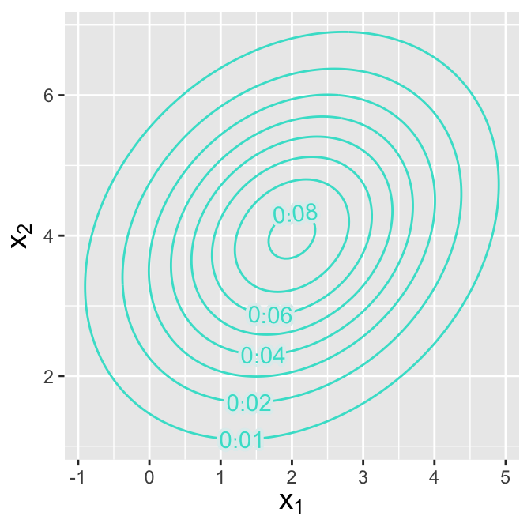
6.6.2 The Conditional Distribution of a Multivariate Normal Distribution
Let’s assume the same setting as in the previous example. What is the conditional distribution of \(X_1\) and \(X_3\) given that \(X_2 = 5\)?
Because of the complexity of the calculation, we will answer this question using
Rcode only, following the mathematical prescription given in the text above.
[,1] [,2]
[1,] 1.875 0.95
[2,] 0.950 1.50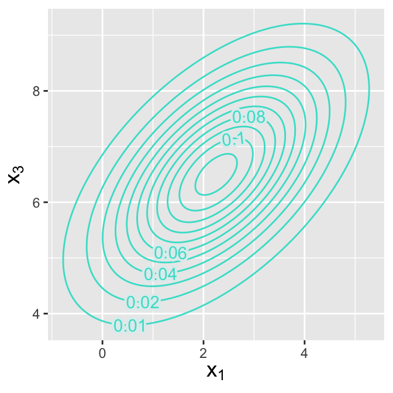
6.6.3 The Calculation of Sample Covariance
Let’s assume that we observe \(n = 40\) iid data drawn from a bivariate normal distribution with means \(\boldsymbol{\mu} = \{2,1\}\) and covariance matrix \[ \boldsymbol{\Sigma} = \left( \begin{array}{cc} 1 & 0.5 \\ 0.5 & 2 \end{array} \right) \,. \] Furthermore, we assume that the covariance matrix is unknown to us. How would we estimate this matrix?
[,1] [,2]
[1,] 1.798 1.704
[2,] 1.385 1.158
[3,] 2.551 2.707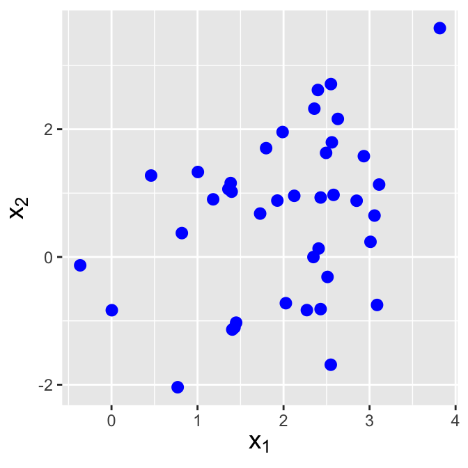
First, let’s sample some data. See Figure 6.10. The sample covariance \(C_{jk}\) between variables \(j\) and \(k\) is given by \[ C_{jk} = \frac{1}{n-1} \sum_{i=1}^n (X_{ji} - \bar{X}_j)(X_{ki} - \bar{X}_k) \,. \] So, for instance, for our data we would determine \(C_{12}\) in
Ras follows:
Code
(1 / (n - 1)) * sum((X[, 1] - mean(X[, 1])) * (X[, 2] - mean(X[, 2])))[1] 0.389421This calculation matches that done by the
Rfunctioncov():
Code
cov(X) [,1] [,2]
[1,] 0.8057418 0.389421
[2,] 0.3894210 1.653003The sample covariance matrix is an unbiased estimator of the true covariance. We mention for completeness that just as the (scaled) sample variance \((n-1)S^2/\sigma^2\) is chi-square-distributed for \(n-1\) degrees of freedom, the sample covariance matrix is sampled from a Wishart distribution, a multivariate generalization of the chi-square distribution.
6.7 Exercises
We are given the following bivariate pdf: \[\begin{align*} f_{X_1,X_2}(x_1,x_2) = \left\{ \begin{array}{cc} k(x_1+x_2^2) & 0 \leq x_1 \leq 1, 0 \leq x_2 \leq 1 \\ 0 & \mbox{otherwise} \end{array} \right. \,. \end{align*}\] (a) Determine the constant \(k\). (b) What is the conditional probability density function \(f_{X_1|X_2}(x_1|x_2)\)?
We are given the probability mass function shown below. (a) Compute Cov(\(X_1,X_2\)). (b) Compute \(\rho_{X_1,X_2}\). (c) Write down the conditional expected value \(E[X_1 \vert X_2 < 1]\). (This can be done by inspection.) (d) Write down the conditional variance \(V[X_2 \vert X_1 = 1]\). (This can also be done by inspection.)
| \(x_1 = 0\) | \(x_1 = 1\) | |
| \(x_2 = 0\) | 0.1 | 0.4 |
| \(x_2 = 1\) | 0.4 | 0.1 |
Every day, we sample \(n\) items built via an assembly line and look for defectives. On any given day, there is a constant probability \(p\) of assembling a defective item, but \(p\) can change from day to day: it is sampled from a Uniform(0,0.1) distribution. (a) What is the unconditional expected value for \(X\), the number of defectives observed per day? (Hint: what is the named distribution for the conditional expected value?) (b) What is the unconditional variance of \(X\)?
We are given the following bivariate probability density function: \[\begin{align*} f_{X_1,X_2}(x_1,x_2) = \left\{ \begin{array}{cl} k x_1^2 x_2 & x_1 \geq 0,\,x_2 \geq 0,\,x_1+x_2 \leq 1 \\ \\ 0 & \mbox{otherwise} \end{array} \right. \,. \end{align*}\] (a) Determine the value of \(k\) such that \(f_{X_1,X_2}(x_1,x_2)\) is a valid bivariate pdf. (b) Compute \(P(X_1 > 0.25 \vert X_2 = 0.5)\). (c) Are \(X_1\) and \(X_2\) independent random variables?
We are given the probability mass function shown below. (a) Write down the marginal probability mass function \(p_{X_2}(x_2)\). (b) Using our answer from (a), write down the marginal cdf \(F_{X_2}(x_2)\). (c) Assume \(p_X(x) = p_{X_2}(x_2)\) (i.e., forget the table exists…all we have now is a univariate pmf). Compute the mean and standard deviation of \(p_X(x)\).
| \(x_1 = 0\) | \(x_1 = 1\) | \(x_1 = 2\) | ||
| \(x_2 = 0\) | 0 | 0.2 | 0.1 | 0.1 |
| \(x_2 = 1\) | 1 | 0.1 | 0.3 | 0 |
| \(x_2 = 2\) | 2 | 0.05 | 0.05 | 0.1 |
We are given the following bivariate probability density function: \[\begin{align*} f_{X_1,X_2}(x_1,x_2) = \left\{ \begin{array}{cl} 60 x_1^2 x_2 & x_1 \geq 0,\,x_2 \geq 0,\,x_1+x_2 \leq 1 \\ \\ 0 & \mbox{otherwise} \end{array} \right. \,. \end{align*}\] We are also given that \(E[X_1] = 1/2\), \(E[X_2] = 1/3\), \(E[X_1^2] = 2/7\), and \(E[X_2^2] = 1/7\). (a) Compute Cov(\(X_1,X_2\)). (b) Compute Corr(\(X_1,X_2\)). (c) Compute \(V[X_1-2X_2]\).
The number of eggs laid by a certain insect is Poisson-distributed with mean \(\lambda\), and the probability that any one egg hatches is \(p\). Assume that the eggs hatch independently of one another. (a) Compute the expected value for the number of eggs that hatch. (b) Compute the variance for the number of eggs that hatch.
We are given the following bivariate probability density function: \[\begin{eqnarray*} f_{X_1,X_2}(x_1,x_2) = \left\{ \begin{array}{cc} k x_1 x_2 e^{-x_1/2} (1-x_2) & 0 \leq x_1 < \infty \,, \,0 \leq x_2 \leq 1 \\ 0 & \mbox{otherwise} \end{array} \right. \,. \end{eqnarray*}\] \(X_1\) and \(X_2\) are independent random variables. (a) What (numerical) value of \(k\) makes this a valid bivariate pdf? (b) Compute \(V[X_1-X_2]\).
We are given that the random variables \(X_1\) and \(X_2\) are distributed uniformly within the region bounded by \(0 \leq x_2 \leq 1\) and \(0 \leq x_1 \leq 2-x_2\). (a) What is \(f_{X_1,X_2}(x_1,x_2)\) in the region specified above? For parts (b)-(d), assume \(f_{X_1,X_2}(x_1,x_2) = k\). (b) Write down the marginal distribution for \(X_2\). (c) Specify the conditional distribution for \(X_1\) given \(X_2 = x_2\). (d) What is the expected value of \(X_1\)? (e) Are \(X_1\) and \(X_2\) independent or dependent random variables?
A car drives through the same five traffic lights while on its way to work every day. The probability that the car has to stop at any given light on any given day is a beta-distributed random variable with parameters \(\alpha = \beta = 2\). (To be clear, the probability is \(p\) that the car will stop at the first light, then \(p\) that it will stop at the second light, etc., up to the fifth light. \(p\) changes from one day to the next.) Assume the traffic lights operate independently. (a) If \(X\) is the r.v. representing the number of lights the car stops at on any single day, what is \(E[X]\)? (b) What is \(V[X]\)?
We are given the following bivariate pdf: \[\begin{eqnarray*} f_{X_1,X_2}(x_1,x_2) = \left\{ \begin{array}{cc} 3x_1 & 0 \leq x_2 \leq x_1 \leq 1 \\ 0 & \mbox{otherwise} \end{array} \right. \,. \end{eqnarray*}\] We are also given that \(E[X_1]\) = 3/4, \(E[X_2]\) = 3/8, \(V[X_1]\) = 3/80, and \(V[X_2]\) = 19/320. Compute the correlation coefficient \(\rho\) between \(X_1\) and \(X_2\).
We are given the following bivariate probability density function: \[\begin{eqnarray*} f_{X_1,X_2}(x_1,x_2) = \left\{ \begin{array}{cc} ke^{-x_1} & 0 \leq x_2 \leq x_1 < \infty \\ 0 & \mbox{otherwise} \end{array} \right. \,. \end{eqnarray*}\] (a) What value of \(k\) makes this a valid bivariate pdf? (b) What is \(P(X_2 < 1)\)? (c) Derive the marginal distribution for \(X_2\). (d) Derive the conditional pdf for \(X_1\) given \(X_2 = x_2\). (e) Compute \(P(X_1 > 2 \vert X_2 = 1)\).
A strangely designed prize machine works as follows: the payout \(X\), in dollars, is a Poisson-distributed random variable whose mean is sampled from a negative binomial distribution with \(r = 4\) and \(p = 1/2\). (a) Compute \(E[X]\). (b) Compute \(V[X]\).
We are given the following bivariate pdf: \[\begin{eqnarray*} f_{X_1,X_2}(x_1,x_2) = \left\{ \begin{array}{cc} c & -2 \leq x_1 \leq 2 \,, 0 \leq x_2 \leq \vert x_1 \vert \\ 0 & \mbox{otherwise} \end{array} \right. \,. \end{eqnarray*}\] (a) Are \(X_1\) and \(X_2\) independent random variables? (b) Determine \(c\). (c) Compute \(E[X_2]\).
We are given the following bivariate pdf: \[\begin{eqnarray*} f_{X_1,X_2}(x_1,x_2) = \left\{ \begin{array}{cc} cx_1x_2 & 0 \leq x_1 \leq 1 \,, 0 \leq x_2 \leq 1 \\ 0 & \mbox{otherwise} \end{array} \right. \,. \end{eqnarray*}\] (a) What is \(c\)? (b) What is \(P(X_2 > 1/2 \vert X_1 = 1/2)\)? (c) What is Cov(\(X_1,X_2\))?
We are given two r.v.’s, \(X_1\) and \(X_2\), whose variances are \(V[X_1] = V[X_2] = 3\) and whose covariance is 2. We define a new r.v. \(U = 2X_1 - X_2\). What is \(V[U]\)?
In an experiment, we flip a fair coin. If the coin shows heads, we then sample a datum \(U\) from a Uniform(1,2) distribution; otherwise we sample \(U\) from a Uniform(0,2) distribution. Compute the unconditional variance of the random variable \(U\).
We are given the following bivariate probability density function: \[\begin{eqnarray*} f_{X_1,X_2}(x_1,x_2) = \left\{ \begin{array}{cc} 12x_1^2(1-x_1) & 0 \leq x_1 \leq 1, 0 \leq x_2 \leq 1 \\ 0 & \mbox{otherwise} \end{array} \right. \,. \end{eqnarray*}\] (a) Are \(X_1\) and \(X_2\) independent random variables? (b) Write down the marginal distribution \(f_{X_2}(x_2)\). (c) Compute \(E[X_1]\).
We are given the following: \[\begin{eqnarray*} f_{X_1,X_2}(x_1,x_2) = \left\{ \begin{array}{cc} c & 0 \leq x_1 \leq 2, x_2 \geq 0, x_2 \leq x_1 ~\mbox{and}~x_2 \leq 2-x_1 \\ 0 & \mbox{otherwise} \end{array} \right. \,. \end{eqnarray*}\] (a) Determine the value of \(c\) that makes \(f_{X_1,X_2}(x_1,x_2)\) a valid pdf. (b) Write down the marginal distribution \(f_{X_2}(x_2)\). (c) Write down the conditional distribution \(f_{X_1 \vert X_2}(x_1 \vert x_2)\).
We are given the following bivariate probability density function: \[\begin{eqnarray*} f_{X_1,X_2}(x_1,x_2) = \left\{ \begin{array}{cc} 4x_1x_2 & 0 \leq x_1 \leq 1, 0 \leq x_2 \leq 1 \\ 0 & \mbox{otherwise} \end{array} \right. \,. \end{eqnarray*}\] (a) Compute \(f_{X_1}(x_1)\). (b) Compute \(f_{X_2 \vert X_1}(x_2 \vert x_1)\). (c) Compute \(P(X_2 < 1/2 \vert X_1=x_1)\).
We are given the following bivariate probability density function: \[\begin{eqnarray*} f_{X_1,X_2}(x_1,x_2) = \left\{ \begin{array}{cc} 2 & x_1 \geq 0~~x_2 \geq 0~~x_1+x_2 \leq 1 \\ 0 & \mbox{otherwise} \end{array} \right. \,. \end{eqnarray*}\] Compute the variance of \(X_1\).
We are given the probability mass function shown below. Compute the variance of \(X_1-X_2\). It may help to know that \(E[X_1^2] = 8/9\), \(E[X_2^2] = 6/9\), and \(E[X_1X_2] = 4/9\).
| \(x_2 = 0\) | \(x_2 = 1\) | ||
| \(x_1 = 0\) | 0 | 1/9 | 3/9 |
| \(x_1 = 1\) | 1 | 2/9 | 2/9 |
| \(x_1 = 2\) | 2 | 0 | 1/9 |
In an experiment, we sample a datum \(X\) from a gamma distribution whose \(\beta\) parameter is drawn from an exponential distribution with mean \(\gamma\). (a) What is the unconditional expected value of \(X\)? (b) What is \(V[X]\)?
We are given a bivariate uniform probability density function that is non-zero for \(0 \leq x_1 \leq 1\) and \(0 \leq x_2 \leq x_1\). (a) What is the amplitude of the pdf inside the region described above? (b) What is \(E[X_1]\)? (c) What is the covariance between \(X_1\) and \(X_2\)? (Note that \(E[X_2] = 1/3\).)
We are given the following bivariate probability density function: \[\begin{eqnarray*} f_{X_1,X_2}(x_1,x_2) = \left\{ \begin{array}{cc} k e^{-x_1/2} & x_1 \geq 0 ~{\rm and}~ 0 \leq x_2 \leq 2 \\ 0 & \mbox{otherwise} \end{array} \right. \,. \end{eqnarray*}\] (a) Find the value of \(k\) that makes \(f_{X_1,X_2}(x_1,x_2)\) a valid pdf. (b) Compute \(E[X_1]\).
We are given a bivariate uniform probability density function that is non-zero for \(x_2 \geq 0\), \(x_2 \leq x_1\), and \(x_2 \leq 2-x_1\). (a) Compute the marginal distribution for \(X_2\). (b) Compute the conditional distribution for \(X_1\) given \(X_2\). (c) Compute \(P(X_1 + X_2 \leq 1)\).
We sample a random variable \(X\) from a normal distribution with mean \(\mu\) and variance one, and you are given that \(\mu \sim N(0,1)\). Write down the variance of \(X\).
We are given the probability mass function shown below. (a) Compute the conditional expected value \(E[X_1 \vert X_2=1]\). (b) Compute the conditional variance \(V[X_1 \vert X_2=1]\).
| \(x_2 = 0\) | \(x_2=1\) | |
| \(x_1 = 0\) | 0.2 | 0.3 |
| \(x_1 = 1\) | 0.4 | 0.1 |
Let \(X_1\) and \(X_2\) be data that are jointly sampled from the bivariate probability density function \[\begin{eqnarray*} f_{X_1,X_2}(x_1,x_2) = k x_1^2 \,, \end{eqnarray*}\] where \(x_1 \geq 0\), \(x_2 \geq 0\), and \(x_1 + x_2 \leq 2\), and \(k\) is a constant. (a) Are \(X_1\) and \(X_2\) independent random variables? (b) What value of \(k\) makes \(f_{X_1,X_2}(x_1,x_2)\) a valid probability density function? (c) Derive the marginal distribution \(f_{X_1}(x_1)\). (d) Derive the conditional distribution \(f_{X_2 \vert X_1}(x_2 \vert x_1)\). (e) \(f_{X_2 \vert X_1}(x_2 \vert x_1)\) is a distribution from what named univariate family of distributions?
We are given the bivariate probability mass function shown below. (a) What is Cov(\(X_1,X_2\))? (b) What is \(\rho_{X_1,X_2}\)? (c) Let \(Y = 2X_1 - X_2\). Derive \(V[Y]\).
| \(x_2 = 0\) | \(x_2 = 1\) | |
| \(x_1 = 0\) | 0.3 | 0.1 |
| \(x_1 = 1\) | 0.1 | 0.5 |